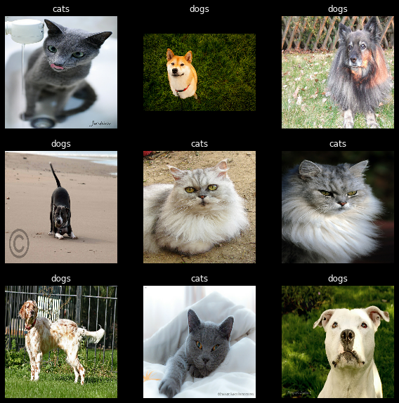
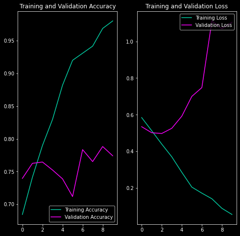

This is the first in my "Understanding Tensorflow" series. In this blog, I explore writing a basic Image Classification task using Tensorflow & Keras.
This blog is based on a jupyter notebook. You should check that out if you wish to run the code. Link: https://github.com/adithya-badidey/tf-experiments/blob/master/beginner-trail/10-pet-classif-basic.ipynb.
I use the the "The Oxford-IIIT Pet Dataset" from https://www.robots.ox.ac.uk/~vgg/data/pets/.
Once downloaded the tarball contains a single folder called images, which contains both the cat and dog photos. In this particular dataset, the label of the image is in the filename. Particularly, the first letter of the filename is capital if the image were that of a cat (like Persian_80.jpg) and lowercase if its a dog photo (like keeshond_130.jpg).
So, once I extract the tarball, I move cats and dogs into their own subfolder. Once I do that the folder structure is as follows:
import tensorflow as tf
import numpy as np
import matplotlib.pyplot as plt
import seaborn as sns
import os
import pathlib
plt.style.use('dark_background')
# Making sure tensorflow is working properly
print("TensorFlow Versions: ", tf.__version__)
if tf.config.list_physical_devices('GPU'):
print("TensorFlow **IS** using the GPU")
else:
print("TensorFlow **IS NOT** using the GPU")
# This prevents some error messages caused by reaching memory limits
gpus = tf.config.experimental.list_physical_devices('GPU')
for gpu in gpus:
tf.config.experimental.set_memory_growth(gpu, True)
TensorFlow Versions: 2.7.0 TensorFlow **IS** using the GPU
data_dir = pathlib.Path('/home/addy/.keras/datasets/pets_photos/')
if data_dir.exists():
print("Found the 'pets_photos' dataset.")
else:
print("Downloading 'pets_photos' dataset.")
# Downloading and formatting the "The Oxford-IIIT Pet Dataset" from
# https://www.robots.ox.ac.uk/~vgg/data/pets/data/images.tar.gz
dataset_url = "https://www.robots.ox.ac.uk/~vgg/data/pets/data/images.tar.gz"
data_dir = tf.keras.utils.get_file(origin=dataset_url,
fname='pets_photos',
untar=True)
data_dir = pathlib.Path(data_dir)
# Delete the tar file (which keras doesn't delete for some reason)
# and move the images folder into the new pets_photos folder
# This code might need to be changed based on your system config
!rm ~/.keras/datasets/pets_photos.tar.gz
!mkdir ~/.keras/datasets/pets_photos
!mv ~/.keras/datasets/images ~/.keras/datasets/pets_photos/images
# Move cats and dogs into their own subfolder so that the
# tf.keras.utils.image_dataset_from_directory function can pickup
# categories from the folder structure.
images_dir = data_dir / 'images'
cats_dir = data_dir / 'cats'
dogs_dir = data_dir / 'dogs'
cats_dir.mkdir()
dogs_dir.mkdir()
f = []
for (dirpath, dirnames, filenames) in os.walk(images_dir):
for file in filenames:
# The cats' image filenames start with an uppercase letter ¯\_(ツ)_/¯
if file[0].isupper():
os.rename(images_dir / file, cats_dir / file)
else:
os.rename(images_dir / file, dogs_dir / file)
# Finally delete the images folder. All photos should be under
# their proper categorical folder.
!rm -r ~/.keras/datasets/pets_photos/images
Found the 'pets_photos' dataset.
dogs_count = len(list(data_dir.glob('dogs/*.jpg')))
cats_count = len(list(data_dir.glob('cats/*.jpg')))
all_count = cats_count + dogs_count
print("Data Directory: ", data_dir)
print("Number of total .jpg files: ", all_count)
print("Number of .jpg images in /cats/: ", cats_count)
print("Number of .jpg images in /dogs/: ", dogs_count)
Data Directory: /home/addy/.keras/datasets/pets_photos Number of total .jpg files: 7390 Number of .jpg images in /cats/: 2400 Number of .jpg images in /dogs/: 4990
Since the appropriate folder structure has been created, I call the tf.keras.utils.image_dataset_from_directory function to import the dataset. This function scans the dataset folder for images and automatically labels each image with the name of the directory it is found in.
# Initializing parameters
batch_size = 32 # Reduce this if you get memory errors
img_height = 160 # I'm keeping this at 160 for no particular reason
img_width = 160 # (there is a reason, I'll share in a future blog post)
seed = 120 # A random seed to get replicable results
epochs = 10 # The number of training epochs
# Initializing the training dataset
train_ds = tf.keras.utils.image_dataset_from_directory(
data_dir,
validation_split=0.2,
subset="training",
seed=seed,
image_size=(img_height, img_width),
batch_size=batch_size)
Found 7390 files belonging to 2 classes. Using 5912 files for training.
Once the dataset is initialized, I do some basic sanity checks to make sure the labels are correct. I wasted a lot of time because of a bug here because the labels were not imported properly and the classifier was stuck at an accuracy of 0.66 (which is what you'll get if you guess that all the images are of that of dogs)
class_names = train_ds.class_names
fig = plt.figure(figsize=(10, 10))
for images, labels in train_ds.take(1):
for i in range(9):
ax = plt.subplot(3, 3, i + 1)
plt.imshow(images[i].numpy().astype("uint8"))
plt.title(class_names[labels[i]])
plt.axis("off")
plt.show()

# Initializing the testing dataset
val_ds = tf.keras.utils.image_dataset_from_directory(
data_dir,
validation_split=0.2,
subset="validation",
seed=seed,
image_size=(img_height, img_width),
batch_size=batch_size)
Found 7390 files belonging to 2 classes. Using 1478 files for validation.
Again, I examine the datasets to make sure that things are as expected. Here I see that each batch has 32 images and each image is of size (160, 160, 3) - the third dimension is for the RGB color values.
for image_batch, labels_batch in train_ds:
print("Images in a batch:", image_batch.shape[0])
print("Labels in a batch:", image_batch.shape[0])
print("Size of each image:", image_batch.shape[1:])
break
Images in a batch: 32 Labels in a batch: 32 Size of each image: (160, 160, 3)
We create a sequential model using tf.model.sequential. The model consists of:
tf.keras.Rescaling) block because the input values are in the range [0,255] whereas inputs to the tf.keras layers are expected to be [0., 1.].tf.keras.layers.Conv2D) with a max pooling layer (tf.keras.layers.MaxPooling2D) in each of themtf.keras.layers.Dense) with 128 units on top of it that is activated by a ReLU activation function ('relu')tf.keras.layers.Dense) which outputs 1 binary value (since the expected output is binary - dor or cat)This model is the same as what is used in this Tensorflow tutorial. I will expand on what these layers in another blog post.
%%time
# This enables prefetch and caching of images
# The AUTOTUNE parameter adjusts the buffer_size dynamically
# Details: https://www.tensorflow.org/guide/data_performance#prefetching
AUTOTUNE = tf.data.AUTOTUNE
train_ds = train_ds.cache().prefetch(buffer_size=AUTOTUNE)
val_ds = val_ds.cache().prefetch(buffer_size=AUTOTUNE)
# Creating a sequential model taking images of shape (160, 160, 3) as input
# and giving output of shape (1,)
num_classes = 1
model = tf.keras.Sequential([
tf.keras.layers.Rescaling(1./255, input_shape=(img_height, img_width, 3)),
tf.keras.layers.Conv2D(16, 3, activation='relu'),
tf.keras.layers.MaxPooling2D(),
tf.keras.layers.Conv2D(32, 3, activation='relu'),
tf.keras.layers.MaxPooling2D(),
tf.keras.layers.Conv2D(64, 3, activation='relu'),
tf.keras.layers.MaxPooling2D(),
tf.keras.layers.Flatten(),
tf.keras.layers.Dense(128, activation='relu'),
tf.keras.layers.Dense(num_classes)
])
# Choosing the tf.keras.optimizers.Adam with
# the tf.keras.losses.BinaryCrossentropy loss function and
# the tf.metrics.BinaryAccuracy as metric
model.compile(
optimizer='adam',
loss=tf.keras.losses.BinaryCrossentropy(from_logits=True),
metrics=tf.metrics.BinaryAccuracy(threshold=0.0))
# Finally fitting the model to the data in train_ds
# with val_ds as the validation dataset
# running for 10 epochs
history = model.fit(
train_ds,
validation_data=val_ds,
epochs=epochs,
verbose=0
)
print(f"Finished {epochs} epochs")
for i in history.history:
print(f"Final {i:<20} {history.history[i][-1]:.5f}")
print()
Finished 10 epochs Final loss 0.05523 Final binary_accuracy 0.98021 Final val_loss 1.10491 Final val_binary_accuracy 0.77402 CPU times: user 26.5 s, sys: 718 ms, total: 27.2 s Wall time: 25.3 s
Finally, we can extract the history of the training from history and visualize it.
acc = history.history['binary_accuracy']
val_acc = history.history['val_binary_accuracy']
loss = history.history['loss']
val_loss = history.history['val_loss']
epochs_range = range(epochs)
plt.figure(figsize=(8, 8))
plt.subplot(1, 2, 1)
plt.plot(epochs_range, acc, label='Training Accuracy', color='#03CEA4')
plt.plot(epochs_range, val_acc, label='Validation Accuracy', color='#fc00ff')
plt.legend(loc='lower right')
plt.title('Training and Validation Accuracy')
plt.subplot(1, 2, 2)
plt.plot(epochs_range, loss, label='Training Loss', color='#03CEA4')
plt.plot(epochs_range, val_loss, label='Validation Loss', color='#fc00ff')
plt.legend(loc='upper right')
plt.title('Training and Validation Loss')
plt.show()

If we examine the first graph, we can see that the training accuracy is skyrocketing while validation model is somewhat static.
This is called overfitting! The model is basically memorizing the training data instead of observing higher level abstractions. We will fix that in future posts.